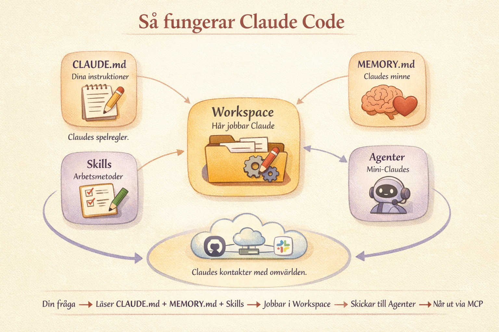

Vad är Claude Code?
De flesta har använt AI som en avancerad sökmotor. Du ställer en fråga, får ett svar, kopierar det, klistrar in det någonstans och justerar. AI:n ser aldrig dina filer, dina mappar eller ditt faktiska arbete.
Claude Code fungerar annorlunda. Det lever på din dator. Det kan se dina filer, läsa dina mappar, söka igenom dina dokument och faktiskt göra saker. Skapa filer, bygga webbsidor, analysera data, skriva presentationer. Riktiga filer som du kan öppna, mejla vidare och jobba vidare med.
Tänk på det som skillnaden mellan att maila en konsult en fråga och vänta på svar, och att ha konsulten sittande bredvid dig vid datorn, med tillgång till alla dina filer, redo att faktiskt göra jobbet.
Det bästa? Du behöver inte kunna programmera. Du ger instruktioner på vanlig svenska, en ordentlig briefing precis som du skulle ge en ny kollega. Ju mer kontext du ger, desto bättre blir resultatet. Under den här workshopen bygger du ett riktigt projekt, publicerar det live på internet och skapar din egen AI-assistent utan att skriva en enda rad kod.
Claude Code är byggt kring några centrala byggstenar som vi kommer att använda under workshopen:
- •Workspace är mappen där Claude jobbar. Alla dina filer, all kontext, allt på ett ställe.
- •CLAUDE.md är dina instruktioner till Claude. Spelreglerna. Claude läser den automatiskt varje gång du startar.
- •Memory är Claudes eget minne, saker den lär sig om dig över tid.
- •Agenter är specialister du skapar för komplexa uppgifter. Tänk: mini-Claudes med varsitt expertområde.
- •Skills är arbetsmetoder. Korta instruktioner som säger åt Claude hur den ska göra något, varje gång.
Allt detta skrivs i markdown, ett enkelt textformat med rubriker och punktlistor. Inga programmeringsspråk, inga komplicerade verktyg. Bara text.

Installation
Steg för steg. Du behöver inte ha gjort detta innan workshopen, men vill du förbereda dig finns allt här.
Installation via desktop-appen (enklast)
Installation via terminalen
mkdir (som betyder "make directory"). Navigera sedan till mappen med cd (som betyder "change directory") och starta Claude Code:Vad är GitHub och varför behövs det?
GitHub är som en molnlagring för projekt, men med superkrafter. Det håller koll på varje ändring, låter dig publicera webbsidor gratis och gör det enkelt att dela ditt arbete.
Du behöver GitHub för att...
- Spara ditt arbete säkert, med allt lagrat online som en backup
- Se vad som ändrats. Varje ändring sparas med tidsstämpel, som "spåra ändringar" i Word
- Publicera webbsidor. Sidor du skapar med Claude Code kan publiceras live gratis
- Samarbeta. Andra kan se och bidra till ditt projekt
Skapa ett GitHub-konto
Övningar
Konkreta saker vi gör under workshopen, från enkla till mer avancerade
1. Hej Claude, din första konversation
Block 2 · IntroStarta Claude Code i en tom mapp och be den presentera sig. Utforska vad den kan se och göra.
→ "Var befinner du dig just nu? Vilka filer ser du?"
→ "Skapa en fil som heter hej.txt med en hälsning till mig"
→ "Skapa en mapp som heter dokument och lägg tre tomma filer i den"
2. Bygg ditt workspace
Block 3 · Steg 1Vi skapar en projektmapp för ett litet fiktivt företag och låter Claude fylla den med allt som behövs: företagsbeskrivning, tonalitet, visuell identitet och rollbeskrivning. Sedan bygger Claude en CLAUDE.md, projektets "minne". Välj ett av alternativen nedan.
→ Skapa en mapp, t.ex. "mitt-foretag"
→ Starta Claude Code i mappen
Har du ett eget företag eller en favorit? Peka Claude till hemsidan så skapar den allt.
→ "Gå till [hemsida, t.ex. www.mittforetag.se] och analysera företaget. Skapa sedan följande filer i mappen:
1.
om-foretaget.md med en kort beskrivning av vad företaget gör, vilka kunderna är och vad som gör det unikt2.
tonalitet.md med en guide för hur företaget kommunicerar: vilken ton, vilka ord som passar, vad man undviker3.
visuell-identitet.md med färger, typsnitt och designkänsla baserat på hemsidan4.
min-roll.md där jag är [välj: VD / marknadschef / grundare] och beskriv vad jag behöver hjälp med i vardagenSkriv allt på svenska."
Inget företag i åtanke? Beskriv ett fiktivt och låt Claude bygga allt.
→ "Jag vill skapa ett workspace för ett fiktivt litet företag. Hitta på ett trovärdigt svenskt företag med 5-15 anställda. Välj själv bransch och namn. Skapa sedan följande filer i mappen:
1.
om-foretaget.md med namn, bransch, vad de gör, vilka kunderna är och vad som gör dem speciella2.
tonalitet.md med en kommunikationsguide: hur företaget pratar, vilken ton, vilka ord, vad man undviker3.
visuell-identitet.md med färgpalett (ange hex-koder), typsnitt och övergripande designkänsla4.
min-roll.md där jag är grundare och VD, med en beskrivning av vad jag gör i vardagen och vad jag behöver hjälp medGör det realistiskt och konkret. Skriv allt på svenska."
→ "Läs alla filer i den här mappen. Skapa sedan en CLAUDE.md som sammanfattar företaget, min roll, vår tonalitet och visuella identitet. Alla svar ska vara på svenska."
→ Stäng Claude Code (Ctrl+C), starta igen med
claude→ "Vad vet du om det här företaget?"
→ "Skriv ett kort mejl till en ny kund, i vår ton."
(Claude ska nu svara baserat på CLAUDE.md och alla filer i mappen)
3. Skapa din första agent
Block 3 · Steg 2Nu bygger vi en agent: en specialist som löser en riktig uppgift åt ditt företag. Först ber vi Claude generera fiktiv data som passar just ditt företag, sedan skapar vi en agent som jobbar med den. Välj ett spår.
En agent är en textfil skriven i markdown, ett enkelt textformat som Claude är tränad på att förstå, som du sparar i mappen
.claude/agents/. Den fungerar som en specialiserad roll. När du ger Claude Code en uppgift kan den delegera delar av jobbet till rätt agent. Tänk på det som att anlita en specialist som alltid följer en specifik arbetsprocess. Agenter passar för uppgifter som kräver flera steg, läsning av flera filer och längre output, som att bygga en presentation eller analysera data.I den här kursen använder vi också något vi kallar skills. Det är ett verktyg för att hantera kortare, återkommande instruktioner, som att alltid formatera mejl på ett visst sätt eller följa en specifik namnkonvention. En skill är en textfil som Claude läser innan den utför en uppgift, ungefär som ett litet facit över hur något ska göras.
Använd en agent när uppgiften är komplex och kräver flera steg. Använd en skill när du vill att Claude alltid ska göra något på ett visst sätt.
Skriv rakt ut vad du vill ha, t.ex. "Skapa en agent som heter dataanalytiker och som kan läsa CSV-filer och hitta trender." Claude skapar agentfilen åt dig automatiskt och sparar den i
.claude/agents/.I terminalen finns också kommandot
/agents som öppnar ett interaktivt gränssnitt för att skapa och hantera agenter. Det funkar inte i desktop-appen, så vi håller oss till att prata med Claude i vanlig text under workshopen.
En potentiell kund har hört av sig och du har ett möte på fredag. Du behöver ett presentationsunderlag, snabbt.
Steg 1: Generera data
→ "Skapa en fil som heter
kundbrief.txt. Hitta på en trovärdig potentiell kund till vårt företag som vill ha hjälp med något vi erbjuder. Skriv briefen från kundens perspektiv: vad de behöver, vilken målgrupp de har, vad presentationen ska användas till och vilken ton de vill ha. Gör det realistiskt baserat på vår verksamhet i CLAUDE.md."Steg 2: Skapa agenten
→ "Skapa en agent som heter presentationsbyggare. Den ska kunna ta en kundbrief och skapa ett komplett presentationsunderlag som en
.pptx-fil med struktur, talarpunkter och designförslag, i linje med vår varumärkesröst och visuella identitet i CLAUDE.md."Steg 3: Testa
→ "Läs kundbriefet och skapa ett presentationsunderlag som följer vår grafiska profil. Leverera som .pptx."
Du har försäljningsdata och vill snabbt förstå vad som går bra och vad som inte gör det.
Steg 1: Generera data
→ "Skapa en fil som heter
verksamhetsdata.csv med realistisk data för vårt företag. Sex månader, med kolumner som passar vår typ av verksamhet (t.ex. intäkter, kunder, projekt, timmar, kostnader). Basera allt på vad vi gör enligt CLAUDE.md. Lägg in några mönster: något som går bra, något som behöver uppmärksamhet, och en förändring över tid."Steg 2: Skapa agenten
→ "Skapa en agent som heter dataanalytiker. Den ska kunna läsa CSV-filer, hitta mönster och trender och leverera en tydlig sammanfattning som en
.html-sida med diagram och visualiseringar."Steg 3: Testa
→ "Analysera vår verksamhetsdata. Vad går bra? Vad behöver uppmärksamhet? Vad bör vi göra annorlunda? Visa resultatet som en interaktiv HTML-dashboard."
Inkorgen är full och du behöver proffsiga svar, snabbt.
Steg 1: Generera data
→ "Skapa en fil som heter
kundarenden.txt med fem realistiska kundärenden till vårt företag. Blanda: en offertförfrågan, ett klagomål, en uppföljning efter möte, en enkel fråga och en partnerförfrågan. Skriv dem som riktiga mejl med avsändare, ämnesrad och brödtext. Basera allt på vår verksamhet i CLAUDE.md."Steg 2: Skapa agenten
→ "Skapa en agent som heter kundkommunikatör. Den ska kunna läsa kundärenden och skriva professionella svar i vår ton. Aldrig för formellt, aldrig för slarvigt. Leverera varje svar som ren text redo att klistras in i ett mejl."
Steg 3: Testa
→ "Läs kundärendena och skriv förslag på svar till alla fem. Prioritera det mest brådskande först."
4. Städa upp: ge ditt workspace en bra struktur
Block 3 · Steg 3Nu har du en mapp full med filer: kontextfiler, en CLAUDE.md, genererad data och output från din agent. Det fungerar, men det börjar bli rörigt. Låt Claude organisera allt i en tydlig mappstruktur.
→ "Titta på alla filer i mappen. Föreslå en bättre mappstruktur med undermappar, t.ex. för kontextfiler, data, output och agenter. Visa mig förslaget innan du flyttar något."
→ När du godkänt: "Genomför ändringen. Flytta filerna till rätt mappar och uppdatera CLAUDE.md så den beskriver den nya strukturen."
→ Kolla resultatet: "Visa mig mappstrukturen som ett träd."
5. Publicera live med GitHub
Block 4Vi tar projektet du just skapade och publicerar det på internet, gratis, via GitHub Pages.
→ "Hjälp mig publicera det här projektet på GitHub Pages. Föreslå ett bra namn för repot."
→ "Uppdatera sidan och publicera ändringarna"
6. Skapa din första skill
Block 5 · PraktiskEn skill är en instruktion som talar om för Claude hur det ska hantera en viss typ av uppgift. Det kan handla om format och tonalitet, men också om hela arbetsflöden, analysmetoder eller kreativa processer. Du kan både använda färdiga skills som andra har byggt och skapa helt egna som passar just ditt sätt att jobba.
En skill är en
.md-fil som sparas i mappen .claude/skills/. Filen innehåller instruktioner som Claude följer när du anropar skillen. Du anropar den genom att skriva / följt av skillens namn i Claude Code. När du ber Claude skapa en skill skapar den filen åt dig automatiskt på rätt ställe.Det finns ett växande bibliotek av färdiga skills som andra har byggt och delat. Du kan installera dem direkt och börja använda, eller använda dem som inspiration för att skapa egna.
Tänk på något du gör ofta som alltid ska se likadant ut. Till exempel:
→ Skriva kundmejl i en viss ton och längd
→ Leverera dokument i ett fast format
→ Skriva veckorapporter med en fast mall
→ Sammanfatta möten med en specifik struktur
→ "Skapa en skill som heter
kundmejl. Varje gång jag anropar den ska du skriva ett professionellt kundmejl som följer vår tonalitet i CLAUDE.md. Mejlet ska alltid ha: en personlig hälsning, en sammanfattning av ärendet i en mening, svar eller lösning i max tre meningar, och avsluta med nästa steg. Max 8 meningar totalt."Claude skapar filen
.claude/commands/kundmejl.md åt dig automatiskt.
→ Skriv
/kundmejl i Claude Code→ "En kund har frågat om vi kan leverera snabbare. Skriv ett svar."
→ Justera: "Gör den lite varmare i tonen" eller "Lägg till att vi erbjuder expressfrakt"
Format och mallar:
→
/veckorapport med fast mall: höjdpunkter, utmaningar, nyckeltal, plan nästa vecka→
/mötessammanfattning som alltid levererar: beslut, åtgärder, ansvarig, deadlineAnalys och research:
→
/konkurrentkoll som besöker en hemsida och sammanfattar vad de erbjuder, hur de kommunicerar och vad vi kan lära oss→
/prisanalys som jämför vår prissättning mot en konkurrent baserat på offentlig infoKommunikation:
→
/offert som skriver offertförslag baserat på vår prislista och tonalitet→
/sociala-medier som skriver inlägg i rätt längd och ton för LinkedIn/InstagramArbetsflöden:
→
/ny-kund som skapar en välkomstmapp med introduktionsmejl, projektplan och checklista→
/pitch som tar en kort idébeskrivning och bygger ut den till en komplett pitch med struktur, argument och nästa steg
Det finns ett snabbväxande community som delar skills. Några bra ställen att börja:
clskills.in har över 700 gratis skills i 60+ kategorier, sökbart.
Awesome Claude Skills på GitHub är en kurerad lista med community-byggda skills.
r/ClaudeAI på Reddit delar regelbundet nya skills och samlingar (2300+ skills och växande).
Claude Code har också inbyggda skills som du kan använda direkt, t.ex.
/simplify, /batch och /debug. Skriv / i Claude Code för att se alla tillgängliga.
7. Avancerat: Claude som arbetspartner
Block 5 · FördjupningGe Claude ett mer komplext uppdrag och jobba iterativt, precis som med en riktig kollega.
→ "Jag ska hålla en presentation om [ämne] nästa vecka. Hjälp mig ta fram en struktur, skapa slides-underlag och en talarmanus-outline."
→ "Skapa en intern FAQ-sida för mitt team med de 10 vanligaste frågorna om [ämne]"
→ "Analysera den här texten och ge mig tre alternativa versioner: en kort (LinkedIn), en medellång (blogg), en lång (rapport)"
Ordlista
Alla begrepp du behöver, förklarat utan krångel
Videoguide: de viktigaste begreppen
Den här videon går igenom de viktigaste begreppen kopplade till Claude Code på ett pedagogiskt sätt. Bra att titta på före eller efter workshopen om du vill fördjupa dig.

- Claude Code
- Ett AI-verktyg som körs i terminalen (eller som app) och kan läsa, skapa och redigera filer på din dator. Till skillnad från vanlig AI-chatt kan Claude Code faktiskt göra saker, inte bara svara på frågor.
- Terminal / Kommandorad
- Ett program där du skriver textkommandon istället för att klicka. På Mac heter det "Terminal", på Windows "PowerShell". Tänk på det som att skicka SMS till din dator.
CLAUDE.md- En textfil som Claude läser automatiskt varje gång du startar ett projekt. Det är Claude Codes "minne". Här skriver du instruktioner, projektbeskrivning och regler. Tänk på den som en briefing till en ny kollega.
- Markdown (.md)
- Ett enkelt sätt att formatera text med symboler:
# Rubrik,**fetstil**,- punktlista. Filändelsen.mdbetyder bara att filen använder denna formatering, men det är fortfarande en helt vanlig textfil som du kan öppna och redigera var som helst. CLAUDE.md, skills och andra instruktionsfiler använder markdown. - Agent
- En specialist som du skapar i Claude Code för en specifik uppgift. T.ex. en "innehållsstrateg" som gör research, eller en "presentationsspecialist" som bygger slides. Agenter har en roll, kunskap (via skills) och tillgång till verktyg. Du skapar dem genom att be Claude göra det, t.ex. "Skapa en agent som heter innehållsstrateg..." I terminalen kan du också använda kommandot
/agentsför att öppna ett interaktivt gränssnitt för att skapa och hantera agenter. Det fungerar dock inte i desktop-appen. - Skill
- En instruktionsfil som lär Claude ett specifikt beteende. T.ex. "skriv alltid mejl i max 5 meningar" eller "följ alltid den här rapportmallen". Du skapar skills som
.md-filer i en speciell mapp. - Slash command
- Ett snabbkommando som börjar med
/. T.ex./helpför hjälp eller/commitför att spara ändringar. Genvägar för vanliga uppgifter. - GitHub
- En plattform för att lagra och dela projekt online. Fungerar som en molnlagring med "spåra ändringar"-funktion. Du kan också publicera webbsidor gratis via GitHub Pages.
- GitHub Pages
- En gratis funktion i GitHub som gör att du kan publicera en webbsida direkt från ditt projekt. Du får en adress som
dittnamn.github.io/projektnamn. - Repository (repo)
- Ett "projekt" på GitHub. En mapp med alla dina filer plus en historik över alla ändringar. Tänk: en projektmapp som aldrig glömmer.
- Commit
- En sparad version av ditt projekt. Varje commit är som en "checkpoint" och du kan alltid gå tillbaka. Tänk Ctrl+S, men med en beskrivning av vad du ändrade.
- Push
- Att ladda upp dina sparade ändringar (commits) till GitHub. Det som ligger lokalt på din dator skickas upp till molnet.
- Node.js / npm
- Node.js är en plattform för att köra JavaScript-program. Behövs inte för att använda Claude Code (du kan installera via desktop-appen eller det inbyggda installationsskriptet), men kan dyka upp i tekniska sammanhang.
- MCP (Model Context Protocol)
- Ett sätt att koppla Claude Code till externa tjänster som Google Drive, Slack eller databaser. Tänk: plugins eller kopplingar. Du behöver inte veta detta dag 1, men det är nästa steg.
- Behörighetsnivåer (Permission modes)
- Du bestämmer hur mycket Claude Code får göra utan att fråga dig. Tre nivåer: fråga alltid (säkrast), tillåt läsning (mellanläge), full tillgång (snabbast men kräver tillit). Under workshopen kör vi på det säkraste läget.
- Prompt / Instruktion
- Det du skriver till Claude Code. Kan vara en fråga, ett kommando, eller en beskrivning av vad du vill ha gjort. Ju tydligare du är, desto bättre resultat.
- Token / Kostnad
- Claude Code mäter användning i "tokens" (ungefär ord). Ju längre konversationer och ju fler filer Claude läser, desto mer kostar det. Anthropic ger ett gratis startbelopp.
- Context window (kontextfönster)
- Claudes "arbetsminne", alltså hur mycket information den kan ha i huvudet samtidigt. Tänk på det som ett skrivbord med begränsad yta. Ju längre konversation och ju fler filer, desto fullare blir skrivbordet. När det blir fullt börjar Claude sammanfatta och glömma äldre delar.
/compact- Ett kommando som sammanfattar hela konversationen till en kortare version. Använd det när Claude börjar "glömma" saker du sagt tidigare. Det frigör plats i kontextfönstret utan att du behöver börja om.
/clear- Rensar hela konversationen och börjar om från noll. Bra när du byter ämne helt. Claude läser fortfarande din CLAUDE.md, så projektinstruktionerna finns kvar.
- Plan Mode
- Ett läge där Claude visar sin plan innan den gör något. Istället för att direkt skapa filer säger den: "Jag tänker göra X, Y och Z, okej?" Du godkänner eller justerar innan något händer. Bra för att behålla kontrollen.
- Modellval (Opus / Sonnet / Haiku)
- Claude Code kan använda olika AI-modeller: Opus (smartast, dyrast, för komplexa uppgifter), Sonnet (balanserad, bra för vardagsarbete), Haiku (snabbast, billigast, för enkla frågor). Du kan byta under samtalets gång.
- Interrupt (Escape)
- Tryck
Escapeför att avbryta Claude mitt i en uppgift. Användbart om du ser att den är på väg åt fel håll. Inget arbete går förlorat och du kan ge nya instruktioner direkt. - Session / Konversation
- Varje gång du startar Claude Code börjar en ny session. Inom en session minns Claude allt ni pratat om. Mellan sessioner börjar den om (om du inte har CLAUDE.md eller Memory). Du kan återuppta gamla sessioner med
claude --resume. - Kontextröta (Context rot)
- Det som händer när kontextfönstret blir för fullt: Claude tappar tråden och ger sämre svar. Lösningen är att använda
/compactför att sammanfatta, eller/clearför att börja om. Ett tecken på kontextröta är att Claude upprepar sig eller "glömmer" saker du nyss sa. - Kontrollpunkter (Checkpoints)
- Automatiska ögonblicksbilder som sparas innan Claude gör ändringar. Om något går fel kan du ångra med kommandot
/undo. Tänk: ett automatiskt "spara innan"-system som skyddar dig. - Minne (Auto-memory)
- En automatisk funktion som sparar dina preferenser och arbetsmönster över tid, mellan sessioner. Skiljer sig från CLAUDE.md: minnet byggs upp automatiskt av Claude själv, medan CLAUDE.md är instruktioner du skriver manuellt.
- Multimodalt stöd
- Claude kan "se" bilder. Du kan klistra in screenshots, foton av whiteboards eller designskisser, och Claude förstår vad som visas. Användbart för att t.ex. bygga en webbsida utifrån en skiss.
- Verktyg (Tools)
- Inbyggda funktioner som Claude automatiskt väljer för att utföra uppgifter: läsa filer, skriva filer, köra kommandon, söka i kodbasen. Du behöver inte veta vilka verktyg som finns. Claude väljer rätt verktyg åt dig.
- Utökat tänkande (Extended thinking)
- En funktion som ger Claude extra tid att resonera och tänka igenom komplexa problem i flera steg innan den agerar. Aktiveras automatiskt vid svårare uppgifter. Kostar fler tokens men ger bättre resultat.
- Flaggor (Flags)
- Tillägg du kan skriva efter
claudenär du startar en session för att aktivera extra funktioner. Till exempelclaude --chromeför att koppla in webbläsaren, ellerclaude --model opusför att välja en specifik modell. Du kan se alla tillgängliga flaggor medclaude --help. - Chrome-integrering (
--chrome) - Genom att starta Claude Code med
claude --chrome(eller skriva/chromei en pågående session) kan Claude styra din webbläsare: klicka på knappar, fylla i formulär, läsa av sidor och testa webbappar. Claude delar din inloggning, så den kan interagera med sajter du redan är inloggad på, som Google Docs, Gmail eller Notion. Kräver att du installerar tillägget "Claude in Chrome" från Chrome Web Store.
Tips och vanliga fallgropar
Gör så här
- Var specifik. "Skapa en snygg webbsida" → "Skapa en webbsida med mitt namn, en kort bio på 3 meningar, ljus bakgrund och grön accentfärg"
- Iterera. Du behöver inte få allt rätt första gången. Säg "ändra rubriken", "gör texten kortare", "byt färg"
- Läs vad Claude föreslår innan du godkänner. Du har alltid sista ordet
- Använd CLAUDE.md. Allt som Claude ska veta varje gång skriver du där
- Spara ofta med commits. Tänk: regelbundna checkpoints
Undvik det här
- Ladda inte upp känsliga filer (lönelistor, personnummer, kunddata) utan att först anonymisera
- Ge inte full behörighet förrän du förstår vad Claude Code gör
- Lita inte blint. Granska alltid resultatet, särskilt siffror och fakta
- Starta inte för stort. Ett litet projekt först, sedan bygger du vidare
Resurser och nästa steg
Fortsätt lära dig
- Officiell Claude Code-dokumentation (fullständig guide)
- Claude Code på GitHub (öppen källkod och community)
- The Non-Technical Person's Guide to Claude Code (utmärkt genomgång)
- Ladda ner Claude Code desktop-app (grafiskt alternativ till terminalen)